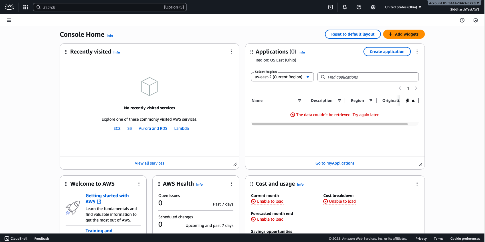

🧪 Lab 11: AWS Hands-On Lab¶
🎯 Objectives¶
In this lab you will:
- Create a free AWS account.
- Launch your first EC2 instance.
- Create a Lambda function.
- Set up an S3 bucket for storage.
- Design a VPC with public and private subnets.
- Deploy instances in both subnets and enable communication.
🔑 Prerequisites¶
- Laptop with internet access.
- AWS Free Tier account (credit/debit card required for signup).
- Basic Linux commands knowledge (
yum,apt,curl).
1. Create Free AWS Account¶
- Go to https://aws.amazon.com/free.
- Click Create an AWS Account.
- Enter email, password, and choose an account name.
- Add contact details and payment method (international debit/credit card works).
- Verify phone number using OTP.
- Select Free Tier plan.
- Log in to AWS Management Console.
✅ Checkpoint: You should see the AWS console dashboard as below.

2. Launch an EC2 Instance¶
- From the AWS console, search for EC2.
- Click Launch Instance → give it a name (e.g.,
ditiss-ec2-test). - Choose Amazon Linux 2 AMI (Free Tier eligible).
- Select t2.micro (Free Tier).
- Create a new key pair → download
.pemfile. - Network settings: allow SSH (22) and HTTP (80) from My IP.
- Launch instance.
-
Convert you
pemfile to ppk to access from Windows Putty- Download PuTTY & PuTTYgen from https://www.putty.org/
- Open PuTTYgen by searching "PuTTYgen" in you search bar
- Click on
Loadbutton - Select your downloaded
pemfile from step 5 above - Click on
Save Private keybutton (If prompted to save without paraphase, click Yes/Okay) - Give it a name which is easy to remember and save it to a known location
- This will output a
.ppkfile which we will use next.
-
Connect via Putty:
- Open PuTTY by searching "PuTTY" in you search bar
- On the left side in "Category" list, under Connection, expand the
SSHoption by clicking+sign - Then expand the
Authsection by clicking+sign - Click on
Credentials - Click on
Browseon the Private key file for authentication: field (The first one from the top) - Browse the
.ppkfile you exported in Step 8 above and clickOpen - Then again on the left side list (Category) scroll to the top and click on
Session - In the
Host Name (or IP Address)enter the name or Public IP of your EC2 instance- To get the name of your EC2 instance, click on EC2 instance ID, then copy the Public DNS
- To get the IP of your EC2 instance, click on EC2 instance ID, then copy the Public IPv4 address
- Click on
Open - Accept the certificate
- Once the terminal opens up, enter user name as ec2-user
- You will be logged in to your newly deployed virtual machine in AWS public cloud
✅ Checkpoint: You can log in to your EC2 instance.
Video Guide
3. Create an S3 Bucket¶
- Search for S3 in console.
- Click Create Bucket → name:
ditiss-lab-bucket-<yourname>. - Choose region (same as EC2).
- Block all public access (recommended).
- Upload a sample file (text/image).
- Download file back from console to confirm.
✅ Checkpoint: File successfully uploaded and downloaded.
Video Guide
4. Create a Lambda Function¶
- In the console, search for Lambda.
- Click Create Function → Author from scratch.
- Function name:
ditiss-lambda-hello. - Runtime: Python 3.x.
- Use default execution role.
-
Paste this code:
def lambda_handler(event, context): return { 'statusCode': 200, 'body': 'Hello from DITISS Lambda!' } -
Deploy and test with a sample event.
✅ Checkpoint: Output should return "Hello from DITISS Lambda!".
Video Guide
5. Create a New VPC with Public & Private Subnets¶
We’ll design a custom VPC called ditiss-lab.
Step 1: Create VPC¶
- Go to VPC in console → Create VPC.
- Resources to create:
VPC Only - Name:
ditiss-lab. - IPv4 CIDR block:
IPv4 CIDR manual input - IPv4:
172.20.0.0/16. - Leave all other settings as defaul
- Click on
Create VPCbutton.
Step 2: Create Subnets¶
- On the VPC Dashboard page, on the right side under
Virtual Private Cloud, click onSubnets - Click on
Create Subnet - VPC ID: Select the subnet which has
ditiss-labas suffix - Public Subnet:
- Subnet Name:
public-subnet. - Availability Zone:
No Preference - IPv4 VPC CIDR block: Selected by default
172.20.0.0/16 - IPv4 subnet CIDR block:
172.20.5.0/24.
- Subnet Name:
- Private Subnet:
- Click on
Add new subnetbutton - Subnet Name:
private-subnet. - IPv4 VPC CIDR block: Selected by default
172.20.0.0/16 - IPv4 subnet CIDR block:
172.20.10.0/24.
- Click on
- Click on
Create Subnetbutton
Step 3: Internet Gateway (IGW)¶
- On the VPC Dashboard page, on the right side under
Virtual Private Cloud, click onInternet Gateways - Click on
Creat Internet gateway - Name Tag:
igw-dittis-lab - Click on
Create Internet Gateway - One the homepage of
Internet gateways, select your newly created igw-dittis-lab - Click on
Actionbutton on the top right side - Select
Attach to VPC - Select
ditiss-lab - Click on
Attach internet gateway
Step 4: Create Route Tables¶
- On the VPC Dashboard page, on the right side under
Virtual Private Cloud, click onRoute Tables - Click on
Create Route Tables - Name:
rtb-dittis-lab - VPC:
ditiss-lab - Click on
Create route table - On the Route tables Dashboard, select the newly created route table
rtb-dittis-laband click onActionbutton on top right side. - Click on
Edit Routes - Click on
Add Route- Destination:
0.0.0.0/0 - Target:
Internet Gateway- Select
igw-dittis-lab
- Select
- Click on Save Changes
- Destination:
Step 5: Change settings of public-subnet¶
- On the VPC Dashboard page, on the right side under
Virtual Private Cloud, click onSubnets - Select
public-subnet - Click on
Actionsbutton on top right side - Click on
Edit subnet settings - Select/Check the
Enable auto-assign public IPv4 addressin Auto-assign IP settings window - Click on
Save - Again, on Subnets dashboard, select
public-subnetand click onActionsbutton on top right side - The select
Edit route table association - Route Table ID: Select
rtb-ditiss-lab - Click on
Save
Step 6: Change settings of private-subnet¶
Alert
This setting is only for demo purposes, in real world, a private subnet should never have a public IP assigned. Instead we use a Jump/Bastion Host which acts as a jump betwen internet and private subnets.
- On the VPC Dashboard page, on the right side under
Virtual Private Cloud, click onSubnets - Select
private-subnet - Click on
Actionsbutton on top right side - Click on
Edit subnet settings - Select/Check the
Enable auto-assign public IPv4 addressin Auto-assign IP settings window - Click on
Save - Again, on Subnets dashboard, select
public-subnetand click onActionsbutton on top right side - The select
Edit route table association - Route Table ID: Select
rtb-ditiss-lab - Click on
Save
Step 7: Create Security Groups¶
Info
Security Groups are integral part of any VPC. This security groups are the network firewall rules which controls what traffic to flow into the hosts/machines inside those security groups. Essentailly we tell the virtual machines which networks and ports you can access or cannot access.
- On the VPC Dashboard page, on the right side under
Security, click onSecurity Groups - Click on
Create security groupbutton on top right side -
Enter following details
- Security group name:
sg-public - Description:
public ssh & http access - VPC: Select
ditiss-lab
- Security group name:
-
Inside Inbound rules tab, click on
Add rule- Type:
SSH - Source:
Custom - IP Range:
0.0.0.0/0 - Again click on Add rule
- Type:
HTTP - Source:
Custom - IP Range:
0.0.0.0/0
- Type:
-
Keep other settings as default
- Click on
Create security group
Repeat the same steps again for creating one more security group for private subnet
- On the VPC Dashboard page, on the right side under
Security, click onSecurity Groups - Click on
Create security groupbutton on top right side -
Enter following details
- Security group name:
sg-private - Description:
private ssh & http access - VPC: Select
ditiss-lab
- Security group name:
-
Inside Inbound rules tab, click on
Add rule- Type:
SSH - Source:
Custom - IP Range:
0.0.0.0/0 - Again click on Add rule
- Type:
HTTP - Source:
Custom - IP Range:
172.20.0.0/0
- Type:
-
Keep other settings as default
- Click on
Create security group
Step 8: Create Instances¶
- In search bar, search for EC2
-
Click on Launch Instances
-
Public Instance:
- Name:
public-instance. - Choose Amazon Linux 2 AMI (Free Tier eligible).
- Select t3.micro (Free Tier).
- Use the same key-pair used for creating inital virtual machine at the beginning or create new one as per your prefrence.
-
In the Network Settings:
- Click on Edit
- VPC: Select the
ditiss-lab - Subnet:
public-subnet - Firewall (security groups):
Select existing security groups - Select
sg-publicfrom the dropdown.
-
Keep other settings as default
- Click on Launch Instance
- Name:
-
Private Instance:
- Name:
private-instance. - Choose Amazon Linux 2 AMI (Free Tier eligible).
- Select t3.micro (Free Tier).
- Use the same key-pair used for creating inital virtual machine at the beginning or create new one as per your prefrence.
-
In the Network Settings:
- Click on Edit
- VPC: Select the
ditiss-lab - Subnet:
private-subnet - Firewall (security groups):
Select existing security groups - Select
sg-privatefrom the dropdown.
-
Keep other settings as default
- Click on Launch Instance
- Name:
Step 9: Install Apache (httpd) on Private Instance¶
- SSH into private-instance.
-
Install Apache on private-instance:
sudo yum update -y sudo yum install -y httpd sudo systemctl start httpd sudo systemctl enable httpd -
Create a test page:
echo "Hello from Private Instance in DITISS Lab!" | sudo tee /var/www/html/index.html
Step 10: Test with curl from pubic-instance¶
- SSH into public-instance using public IPv4
-
On public-instance, run:
curl http://<Private-Instance-Private-IP>
✅ Checkpoint: You should see "Hello from Private Instance in DITISS Lab!".
Video Guide
🧭 Key Takeaways¶
- You created and explored core AWS services (EC2, Lambda, S3, VPC).
- You designed a custom network with public/private subnets.
- You tested private-to-public connectivity using
curl.